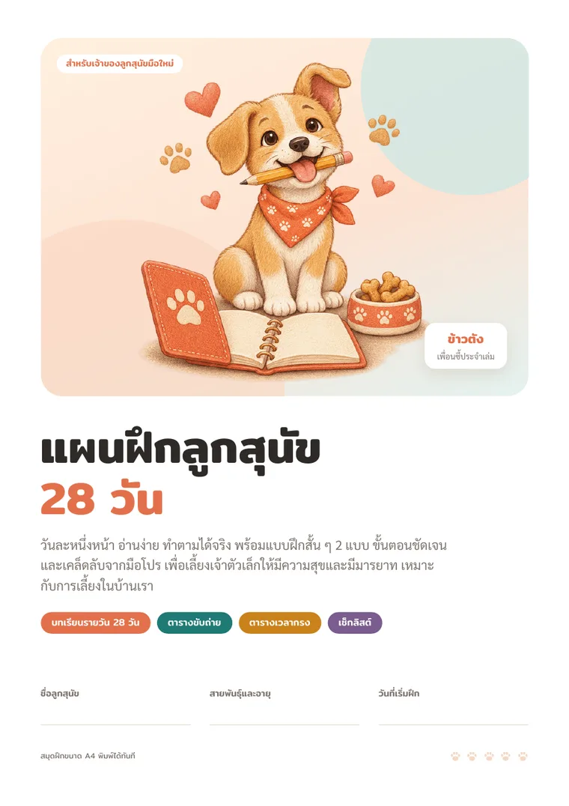
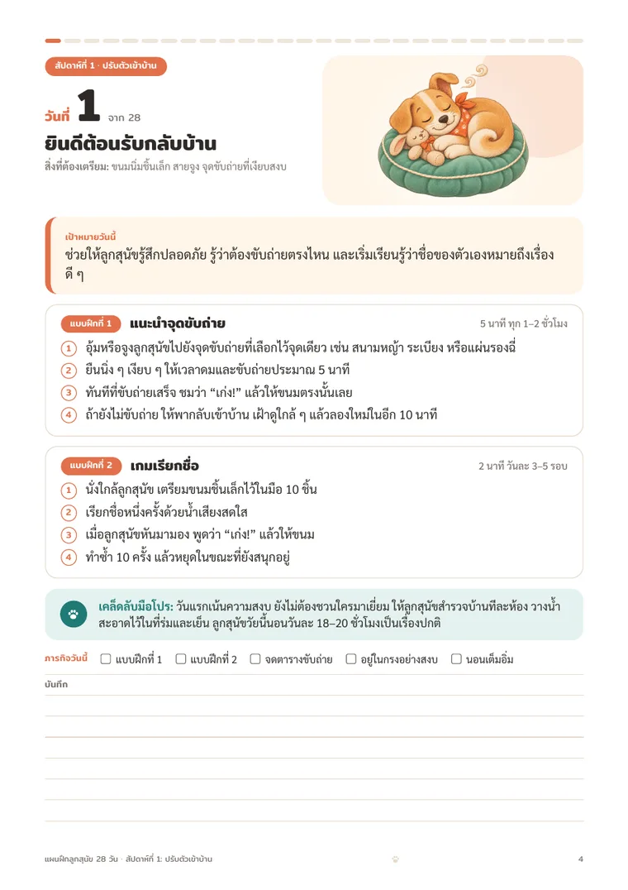
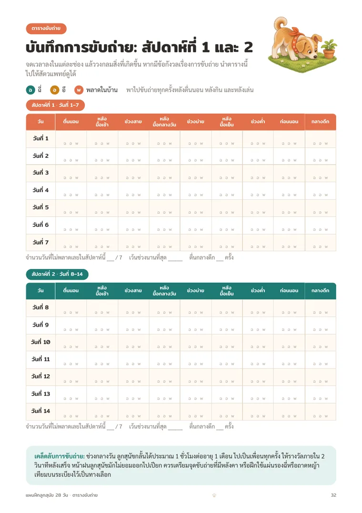
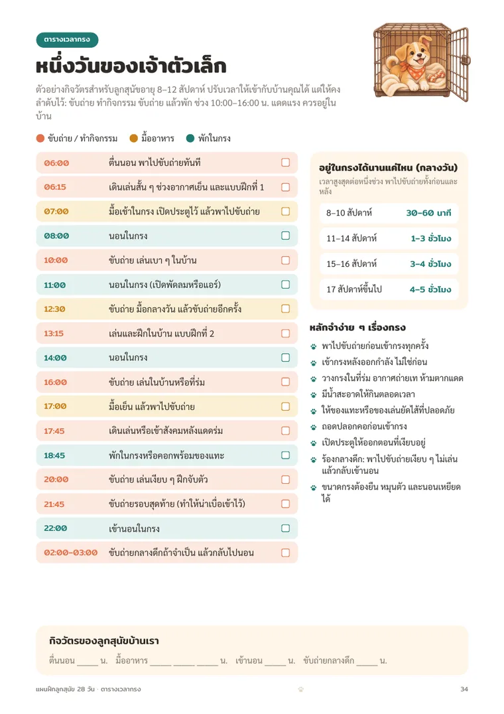
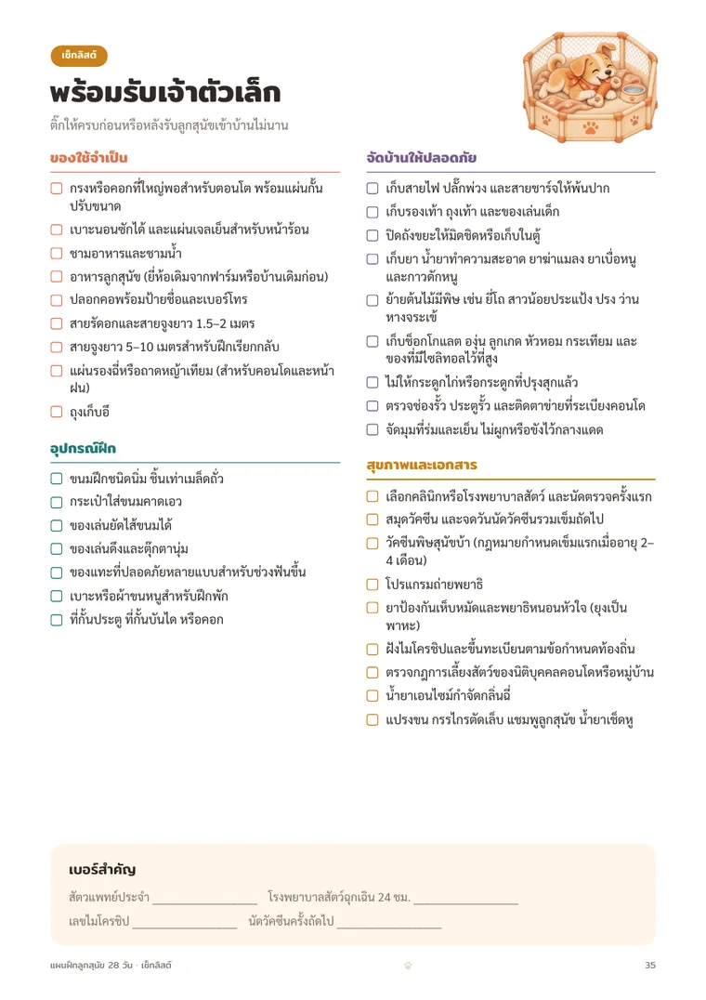

บทเรียน 28 วัน
วันละหน้า มีเป้าหมาย แบบฝึก 2 แบบพร้อมขั้นตอน 1–2–3–4 และเคล็ดลับ ใช้เวลาไม่เกินวันละ 15 นาที
วันละหนึ่งหน้า แบบฝึกสั้น ๆ 2 แบบ ขั้นตอนชัดเจน และเคล็ดลับจากมือโปร ช่วยให้เจ้าตัวเล็กขับถ่ายเป็นที่ นอนในกรงได้ เดินสายจูงเป็น และเป็นน้องหมาแสนดีของบ้าน ออกแบบมาสำหรับอากาศร้อน คอนโด และหน้าฝนแบบบ้านเรา

วันละหน้า มีเป้าหมาย แบบฝึก 2 แบบพร้อมขั้นตอน 1–2–3–4 และเคล็ดลับ ใช้เวลาไม่เกินวันละ 15 นาที
จดเวลาฉี่ อึ และการพลาดในบ้าน ไม่กี่วันก็เห็นรูปแบบ แล้วการฝึกขับถ่ายจะง่ายขึ้นมาก
ตัวอย่างกิจวัตร 1 วันสำหรับลูกสุนัข 8–12 สัปดาห์ หลบแดดช่วงกลางวัน พร้อมตารางเวลาที่อยู่ในกรงได้ตามอายุ
ของใช้จำเป็น จัดบ้านให้ปลอดภัย วัคซีน การเข้าสังคม และตารางติดตาม 14 ทักษะสำคัญ
ฉลองวันที่ 28 ด้วยใบประกาศ “น้องหมาแสนดี” ให้กรอกชื่อและถ่ายรูปเก็บไว้เป็นที่ระลึก





กดปุ่มเดียว ได้ไฟล์ PDF ทันที ไม่ต้องสมัครสมาชิก
พิมพ์บนกระดาษ A4 ทั้งเล่ม หรือเฉพาะตารางขับถ่ายมาติดตู้เย็น
ครั้งละ 2–5 นาที วันละหลายรอบ แล้วติ๊กภารกิจของวันนั้น
ข้าวตังเป็นลูกหมาไทยพันธุ์ผสม ขนสีน้ำผึ้ง หูข้างหนึ่งพับ อีกข้างตั้งครึ่งเดียว ชอบขนมพอ ๆ กับชอบการได้รับคำชมว่า “เก่ง!” ข้าวตังจะแสดงให้ดูทุกท่า ตั้งแต่นั่ง หมอบ เดินสายจูง ไปจนถึงวันรับปริญญา
ข้าวตังขอฝากบอก: ส้มโอเป็นแค่แมวส้มที่ชอบนอน ไม่ต้องไปสนใจนะ 🙄

ไม่ต้องอาย ข้าวตังเข้าใจ (นิดหน่อย) ส้มโอก็มีสมุดฝึก 28 วันของตัวเอง ตั้งแต่กระบะทราย ที่ลับเล็บ ยันไฮไฟว์ ฟรีเหมือนกันเป๊ะ
ใช่! พาฉันไปหาส้มโอ 🐱 ไม่ล่ะ ฉันทีมหมาตลอดไป 🐶ฟรีจริงทั้งเล่ม ไม่ต้องสมัคร ไม่ต้องกรอกอีเมล กดดาวน์โหลดแล้วได้ไฟล์ทันที แชร์ให้เพื่อนที่เพิ่งรับน้องหมาได้ด้วย
ออกแบบมาสำหรับลูกสุนัขสุขภาพดีอายุประมาณ 8 สัปดาห์ขึ้นไป แต่สุนัขที่โตกว่านั้นก็ใช้บทเรียนส่วนใหญ่ได้ แค่ปรับความยากให้เหมาะสม
ได้แน่นอน ในเล่มมีทางเลือกการฝึกขับถ่ายด้วยแผ่นรองฉี่หรือถาดหญ้าเทียมบนระเบียง การฝึกในลิฟต์และล็อบบี้ และการจัดห้องให้ปลอดภัย
ไม่เป็นไรเลย ลูกสุนัขแต่ละตัวเรียนรู้เร็วช้าไม่เท่ากัน จะใช้สองสามวันกับหน้าเดียวก็ได้ สิ่งสำคัญคือฝึกสั้น ๆ อย่างสม่ำเสมอและสนุก
ไม่ได้ เล่มนี้เป็นคำแนะนำการฝึกทั่วไป เรื่องวัคซีน ยาป้องกันพยาธิ และสุขภาพ ควรปรึกษาสัตวแพทย์เสมอ หากน้องมีอาการกลัวหรือก้าวร้าว ควรปรึกษาครูฝึกหรือสัตวแพทย์
ดาวน์โหลดสมุดฝึกฟรี แล้วเริ่มบทเรียนวันที่ 1 ได้ตั้งแต่วันนี้
ดาวน์โหลด PDF ฟรี